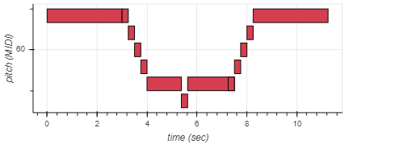
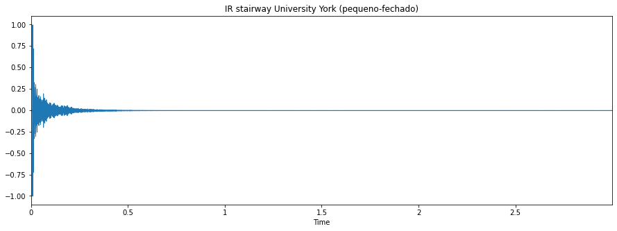

Áudio criado em MIDI
O áudio em MIDI criado é parte da introdução do musical Fantasma da Opera

A seguir está o áudio MIDI criado
Resposta ao Impulso em tres ambientes diferentes

Tocando "Fantasma da Opera" nesses três ambientes.
Tocando "Fantasma da Opera" na escadaria
Tocando "Fantasma da Opera" no auditório
Tocando "Fantasma da Opera" na igreja